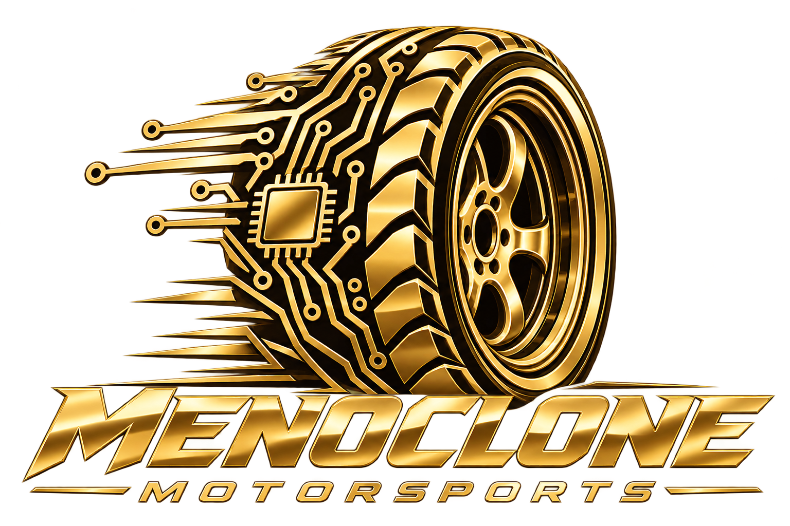
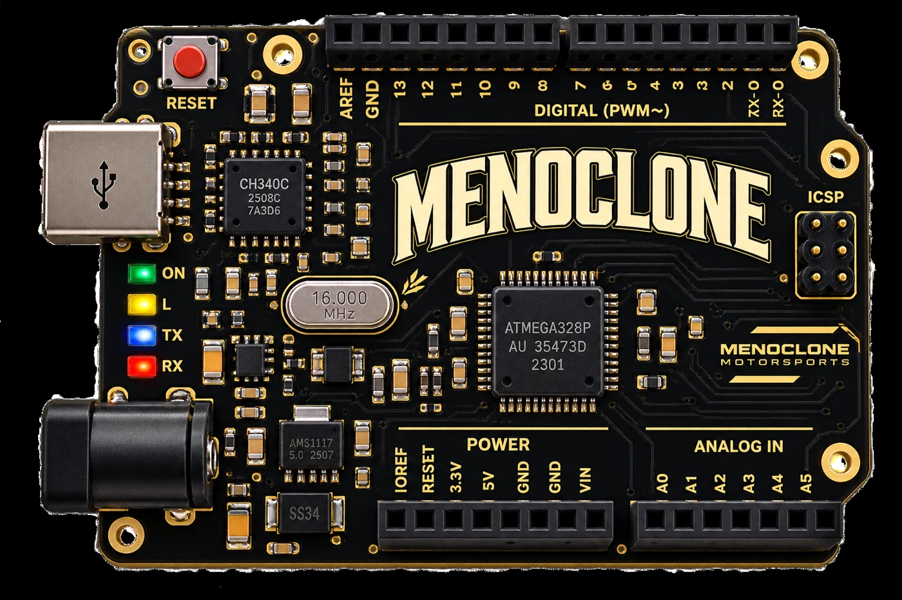
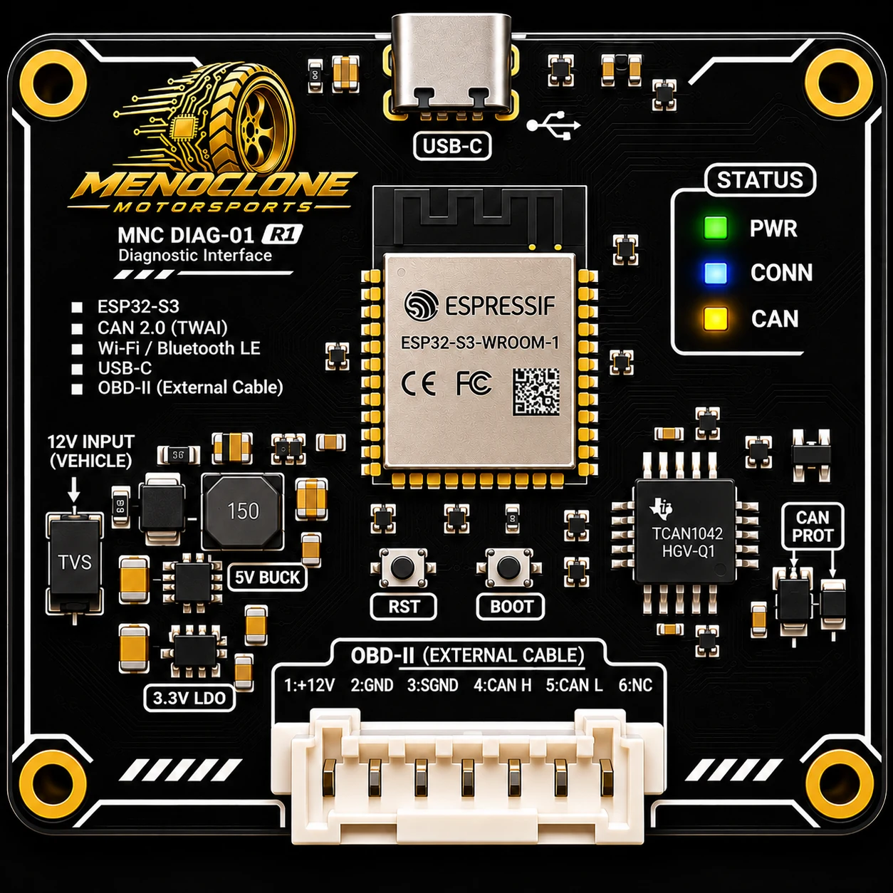
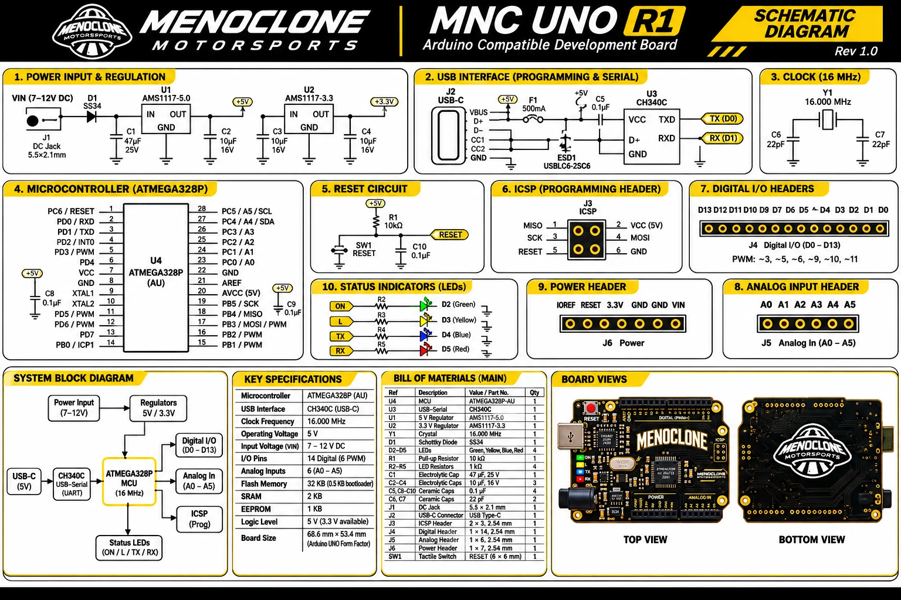
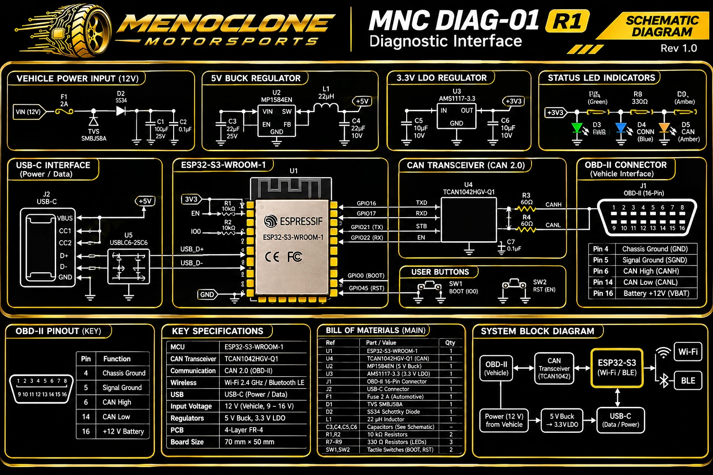

CONCEPT VEHICLES
Automotive design, digital prototyping and exploration of innovative vehicle concepts.

MENOCLONE Motorsports is the open source motorsports sector of MENOCLONE. We focus on developing innovative products, sharing engineering knowledge, and exploring new possibilities in automotive electronics and connected vehicle technology.
At MENOCLONE Motorsports, we love being part of the open source community. We are inspired by the makers, developers, engineers, students, educators and curious minds who share ideas, solve problems together and help each other learn. Every useful tutorial, thoughtful code review and documented experiment can open the door for someone else to create something extraordinary.
We believe the best engineering journeys are shared. As we develop the MNC UNO R1 and MNC DIAG-01, we want to exchange knowledge, listen to feedback, celebrate contributors and make technical learning more approachable. Our current board diagrams are preliminary concepts; verified design files and specific open source licenses will be announced when ready.
Make room for beginners and experienced builders to ask questions and exchange knowledge.
Document our experiments, invite constructive feedback and publish verified resources when ready.
Support thoughtful collaboration and celebrate the people whose ideas help move engineering forward.
Automotive design, digital prototyping and exploration of innovative vehicle concepts.
Embedded electronics, vehicle diagnostics and connected automotive technology.
Advancing our studies and development to create thoughtful products for yesterday’s future.
From the first blinking LED to the complex language of vehicle networks, our boards are being developed to make electronics approachable and automotive technology more understandable. Explore two projects currently in development.

Start with the basics of circuits and build toward powerful prototypes. The MNC UNO R1 is envisioned as a hands on learning platform for coding, sensors, robotics, and embedded systems.
LED experiments, switches, sensor projects, small robots, motor control and early automotive electronics prototypes.
Target specifications based on the familiar Uno architecture. Final hardware implementation and compatibility require testing.

A powerful direction for connected vehicle diagnostics. Designed around the ESP32-S3, this board concept explores how CAN networks and onboard diagnostics can provide meaningful insight into vehicle operation.
Read supported diagnostic trouble codes, monitor available live engine parameters, explore CAN traffic in controlled settings and connect data to future software dashboards.
Concept artwork is illustrative, not a validated schematic or pinout. Vehicle communication and electrical protection must be verified before connection to a car. Initial scope targets supported CAN based OBD-II vehicles, not every diagnostic protocol.
Our MNC UNO R1 introduces core electronics through a familiar Arduino compatible architecture. The illustrated diagram brings together power conditioning, USB communication, the ATmega328P microcontroller, input and output connections, and visual status indicators. It is an educational design overview while the physical board remains in development.

The concept illustrates a barrel jack input and regulated 5 V supply for the controller. A 3.3 V rail is also proposed for compatible peripherals. Final regulator selection, thermal limits, protection, and USB versus external power selection require validation.
The 8 bit ATmega328P is the intended processing core, operating at a target clock of 16 MHz. Its digital and analog interfaces support beginner experiments and increasingly sophisticated embedded projects.
A USB-C connector and CH340C USB to UART interface are shown for computer connectivity and serial communication. The finished circuit must correctly implement USB-C configuration, reset, and programming connections.
The Uno style headers target 14 digital pins, including 6 PWM capable outputs, plus 6 analog inputs. Status LEDs help visualize power and serial activity, making the board suitable for circuits, sensors, robotics, and automation learning.
Explore the proposed architecture behind our MNC DIAG-01. This schematic overview illustrates how vehicle power, regulation, an ESP32-S3 controller, and a CAN transceiver could work together in an automotive diagnostic interface.

The diagram proposes a fused 12 V input, transient voltage suppression, a 5 V buck stage, and a 3.3 V regulator. Automotive load dumps, reverse polarity, transients, and thermal performance still require engineering validation.
The ESP32-S3 is the proposed computing core, supporting embedded firmware, Wi-Fi, Bluetooth LE, and diagnostic data processing. The design shows boot and reset controls for development.
A TCAN1042 family transceiver is shown connecting the controller to CAN High and CAN Low. Firmware, transceiver standby behavior, bus termination, and physical layer protection must be verified before vehicle use.
USB-C is proposed for programming and data, while power, connection, and CAN indicators would help developers understand device activity. USB power routing needs careful design to prevent backfeeding.
Founded in 1977 by Bodo Buschmann and Klaus Brackmann, BRABUS began with a vision for more individual and performance focused vehicles. Through distinctive bodywork, high performance engineering and bespoke interiors, the company helped show how customization can transform a vehicle into a personal expression of design and technical ambition.
At MENOCLONE Motorsports, we admire that willingness to question convention. We are inspired by the idea that automotive innovation can come from passionate builders who study, experiment and create something different.
Our own path centers on open source learning, accessible electronics, embedded systems and diagnostic tools. From the MNC UNO R1 to the MNC DIAG-01, we are exploring how creativity and practical engineering can open new doors for the next generation of makers.
We believe the future of automotive design is shaped by those willing to keep learning and keep building.
Independent inspiration only. MENOCLONE Motorsports is not affiliated with, endorsed by or partnered with BRABUS. Explore the BRABUS story ↗
As an open source focused engineering initiative, our development journey continues through study, experimentation and hands on engineering. From approachable learning tools to ambitious automotive interfaces, MENOCLONE Motorsports is building the knowledge and prototypes that can shape future products.
Explore the wider creative universe at MENOCLONE.com.
Explore our vision, product concepts, development roadmap, commercial hypotheses and opportunities for strategic collaboration.
Our investor presentation is an encrypted PDF. Enter the access password when your PDF viewer prompts you to open the downloaded file.
Investor materials are concept stage and confidential. This download is not an offer of securities. PDF encryption protects the contents, but the file itself is publicly downloadable on GitHub Pages. For restricted distribution, use authenticated private hosting.